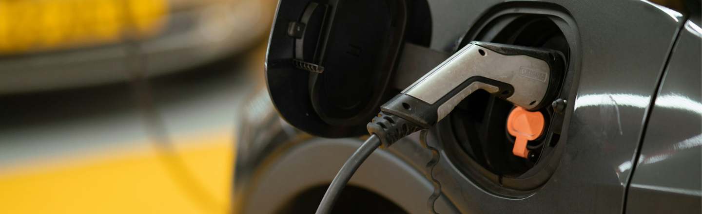

MV Fast Charging
Medium-voltage fast charging infrastructure for ferries, workboats and heavy vehicles, designed to handle megawatt-scale power and future battery-electric fleets.
Rather than looking at a single technology, GREENPORTSIDE considers the entire port energy system – demand, supply and storage – across short-, medium- and long-term future scenarios. The project explores how different technologies can work together in an islanded microgrid, centred on medium-voltage (MV) fast-charging for ferries, cargo vessels and vehicles.
Medium-voltage fast charging infrastructure for ferries, workboats and heavy vehicles, designed to handle megawatt-scale power and future battery-electric fleets.
Low-profile overtopping wave energy converters integrated into the breakwater to harvest continuous wave power at the port boundary, complementing wind and solar.
Vertical-axis wind turbines suited to turbulent port wind conditions, offering compact, ground-accessible generation close to the loads.
Solar on rooftops, façades, car-park canopies and walkways to make the most of limited space and strong local solar resource.
Assessment of tidal flows and potential tidal-mill-style concepts to add a predictable, clean energy source to the port mix.
Large-scale storage using liquid air, allowing excess renewable energy to be stored and dispatched when demand peaks, with novel efficiency improvements developed at the University of Brighton.